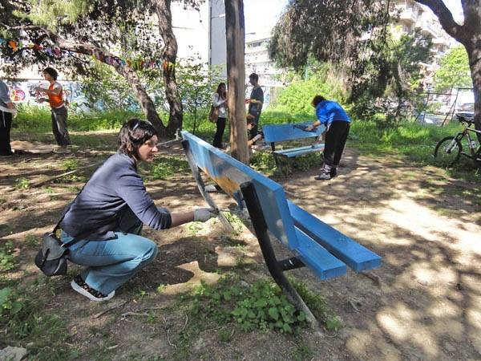
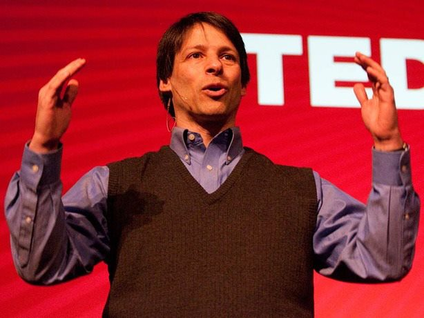
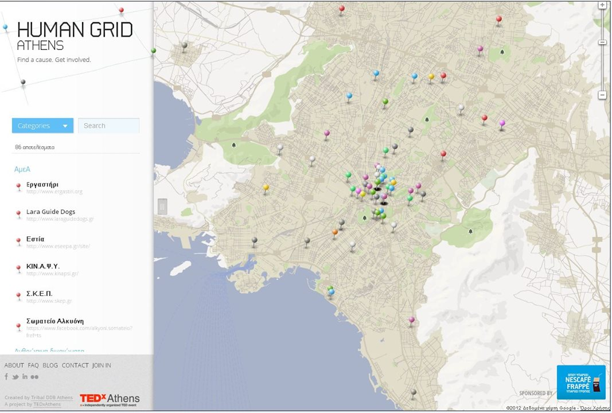

Atenistas - TEDx: When human stupidity meets the neoliberal invasion
In the last few years, new forms of volunteering are popping up and new excuses to establish them arise. The Greek state, after it evenly divided the responsibility of the economic crisis, began to set new conditions to overcome it. The new mentality that’s been developing after this responsibility was absorbed and internalized by all the peaceable citizens and pacificators of the society is to try to manage this crisis and to substitute the state where it is willingly absent. This is one side of the coin, that defines insurrectionism as a tool to manage this crisis and to sugarcoat the illness of the system, not as a practice to overthrow it. But this is just one side of the coin.

Volunteering and human stupidity.
The other side of the coin that is materialized on stupidity and acts more as a form of psychotherapy is the guided stupefaction. Its purpose is not to manage the existing crisis, but to make every living person stupid by wrapping them in streamers, colours and soda cans to save the seals in Honolulu. There are plenty of examples of class-unconscious mass with psychotraumatic ties of stupidity, like atenistas or ONGs or student organizations that clean benches from chewing gums.
The lobotomized ones are quite a few, but there is no space for silly kids that don’t know how to spend their dad’s pocket money. There is no more space for mentals who, just because they ran out of Dead Sea seaweed tea or hot cocoa sprinkled with tarama salad, decided to take the streets and rename picking up chewing gum from the benches into an effort to participate in the commons. To say it clear.
Rubbing chewing gum off the benches or cleaning up the posters on the streets, when at the same people die around the corner and you don’t say a word, is not activism. It’s social aphasia. And it makes you look inhumane. And a beast. The face-to-face with the mayor Kaminis, who publicly says that atenistas is his favorite citizen group, is not activism, it’s mental illness. Knitting sweaters for the trees in Klafthmonos square, where on December 2011 Kaminis removed all the benches so that the homeless wouldn’t sleep there, when in 2012 they found a bunch of blankets, clothes and toys gathered for poor kids on the garbage bins next to the City Hall and Kaminis said that they threw them away because they were so many that they wouldn’t fit in the city hall’s storage, is not activism.
It’s Stockholm syndrome. As words change, meanings change, the social assimilation of the meanings changes. Atenistas are thus called activists, just like the fascists from Golden Dawn are called indignant citizens, just like the alienation of the Athens city center and rethinkAthens are called gentrification, just like people fighting for the society are called terrorists, just like Theofilou[1] is called guilty, just like the plans for Lambedusa are called rescue plans.
Neoliberal invasion and Volunteering-See: TEDx
Let’s continue on to the drastically neoliberal volunteering and its distorted definition of volunteering that all bosses around the globe promote, in order to take advantage of sciolist kids who are looking for a way out. It’s a masked form of ruthless exploitation that is promoted with the argument of working experience in big companies, lawyer firms or even -mostly- ONGs, where the employer chooses to hire most of its workforce without pay or with a very basic allowance, getting the practice across as obvious and necessary.
We’ll focus on the TEDx phenomenon, the example that reflects in its ideology all the above mentioned practices of disorientation from everyday life, calling the ones who react to the invasion of neoliberalism miserables. The TEDx organizers try to convince us that a ray of optimism is shining. It came from an idea by the architect Richard Saul Wurman who, in mid-80’s, started organizing meetings titled: “Ideas worth spreading”. In 2001, the publisher Chris Anderson bought the rights to organizing them and turned the scarce meetings into the tight functions of an ONG. The Civil Society comes to rescue us, as the Messiah, from the swamp of traditional structures.
The description of the ideal speaker leaves little doubt about the event’s orientation and the deification of entrepreneurship and the private sector, as if they were the only sectors of development and prosperity (regardless of the social and environmental consequences), and prepares us about the ethics of it. Nick Hanauer confirms our suspicions. In 2012, he reported that he was censored and that his talk wasn’t uploaded on the website, because he mentioned the economic inequality in USA and the devastating consequences the tax exemptions of the big companies had in the society as a whole.
Another example of a speaker that demonstrates the role that TEDx came to play is Mathaios Giosafat, apparently the most renowned psychoanalyst of this poor country. Giosafat as a choice was no coincidence, since in his book “Growing up in a greek family” we learn that the “hooligans” are a bunch of mentally disordered rich brats whose moms didn’t breastfeed them and didn’t love them as needed on their first years of life, and as a result they developed hatred towards the society, which they externalize by burning stuff on the streets… and on the football fields.
His talk was about Pagkalos’ phrase “We all took our share”. The thinker Giosafat spoke about a society in distress, without mentioning the economical aspect of the issue. He describes a state of lawlessness (not at fault of the authorities, of course), where the main evils of the society is consumerism and the lack of team spirit. TEDx corrects the latter, as it helps us become better humans.
It’s worth mentioning that the TEDx Academy entrance costs is €50, and a TEDx event entrance fee is €65. A new type of ticket was also introduced, as a donor-sponsor, for the price of €200. There are many “levels” of membership ranging from US$3.750 for a standard conference membership up to US$125.000, which would make you a “patron”. Lastly, if you don’t want to wait with the masses for the youtube uploads of the precious talks, you can watch a conference live, for the symbolic sum of US$600. Two conferences cost US$1000.

Regarding the volunteers working behind the scenes of the events, under the cover of unconditional offering (the supposed social solidarity), they end up being, as always, the privileged “victims” of labor exploitation. The question that comes to mind, since it’s a non-profit organization, that doesn’t pay the speakers, mostly works with volunteers, is supported by a vast sponsor network (cell phone companies, multinationals, food chains, newspapers, hotels, banks, car industries, even embassies), is: where is all the money from all the memberships channeled?
TEDx doesn’t stop there. The Human Grid initiative that they promote, has to do with mapping the volunteer organizations and collective initiatives, so that the citizens who are interested can find out who to talk to in order to offer their services. Naturally, most of the positions where someone can offer their services complimentary doesn’t involve actual social contribution to our less fortunate neighbours or to help save the environment, but instead has to do with saving money for the NGOs themselves (secretary positions, call centers, staffing etc).

If simply registering the volunteer organisations on an internet map seems innocent enough, the NGO training workshop for the development of volunteers organised by Vonuteer4Greece, a volunteer work web platform, is far from innocent. It’s obvious that TED goes next level: from simply promoting the idea of volunteering, to creating a whole factory.
Because in Greece, where there are 1.345.387 (registered) unemployed, it’s pathetic, it’s a waste of creativity, even a sign of antisocial behaviour for the citizens to vindicate jobs, a decent wage and employment conditions, collective labour agreements, but advertising free labour and training workshops by state-subsidised, but for the rest Not-for-profit organisations to find and develop free workforce is not considered shameful and utter submission to the bosses’ interests. Nope. This is a fresh, happy trend, free of any complexes.
ValueValuer
PD.The information regarding TEDx were taken from freequencyradio.wordpress.com. It’s worth consulting it for more info. [in Greek]
[1] Tasos Theofilou is a Greek anarcho-communist who was falsely accused of participating in an robbery in 2012, as well as the “formation of and membership in a terrorist organization” (referring to his alleged involvement in the urban guerrilla group Conspiracy of Cells of Fire).
Translation from Spanish: Zoi Gialitaki